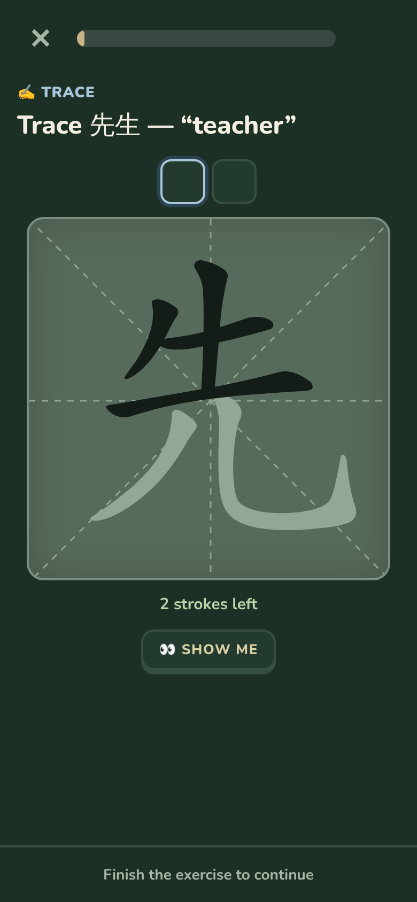
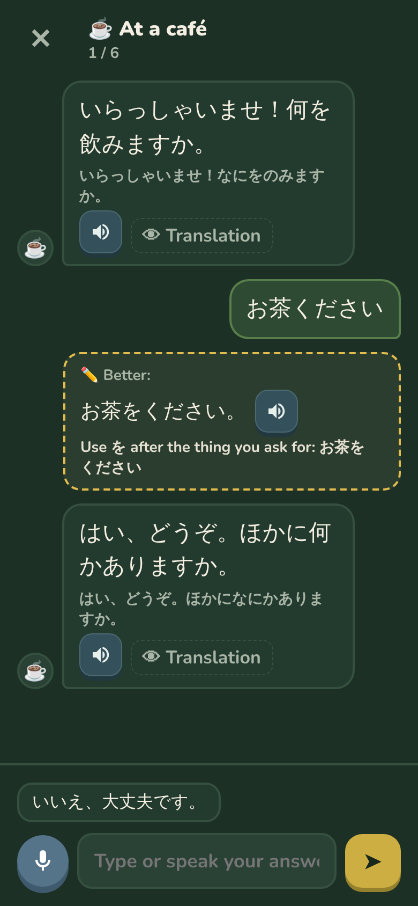

日
あ
本
Bloomko
Watch your
Japanese bloom
Write it
Kanji
stroke
by stroke

Talk
An
AI tutor
that works offline

Kana · N5 → N3
From
あ
to
real Japanese
さくら
sakura · cherry blossom
先生
sensei · teacher
日本語
nihongo · Japanese
And
so much
more
📷 Words from a photo
📖 Stories to listen to
🗣️ Pronunciation check
🧠 Memory hooks for kanji
📱 Widget · 🔄 Sync
🌱 A plant that grows daily
Start growing
today
Get early access
bloomko.eu
link in bio 🌱